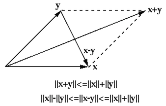
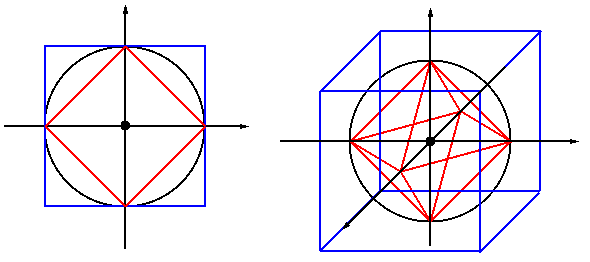

Next: Matrix Norms Up: algebra Previous: Pseudo-Inverse
The norm of a vector  , denoted by
, denoted by  , can be
intuititvely interpretated as its “size”. For example, the norm
of a real number
in the 1-D real space is its
absolute value , or its distance to the origin, and the norm of
a complex number
is its modulus
,
its Euclidean distance to the origin. Here is the most general definition
of a vector norm:
, can be
intuititvely interpretated as its “size”. For example, the norm
of a real number
in the 1-D real space is its
absolute value , or its distance to the origin, and the norm of
a complex number
is its modulus
,
its Euclidean distance to the origin. Here is the most general definition
of a vector norm:
Definition: The norm of a vector  in vector space
in vector space
 is a real non-negative value representing the length or magnitude
of the vector. Specifically, the norm of satisfy the
following three conditions:
is a real non-negative value representing the length or magnitude
of the vector. Specifically, the norm of satisfy the
following three conditions:
The triangle inequality can also be expressed in alternative forms. If we define , the triangle inequality becomes
and  are in the same
direction, the second equality holds if they are in opposite direction.
More specially when
, both equalities hold.
are in the same
direction, the second equality holds if they are in opposite direction.
More specially when
, both equalities hold.

The p-norms of an n-D vector
![${\bf x}=[x_1,\cdots,x_n]^T$](img314.svg) and a function
and a function
 are defined as:
are defined as:
 ,
,  , and
, and  are most
commonly used:
, the absolute sum of all
are most
commonly used:
, the absolute sum of all  elements:
, the Euclidean norm:
, the maximum absolute value of all elements:
elements:
, the Euclidean norm:
, the maximum absolute value of all elements:
Out of the three p-norms, the Euclidean 2-norm is the only one that
is unitary invariant, i.e., it is conserved or invariant under
any unitary transform
, where  is a
unitary matrix satisfying
:
is a
unitary matrix satisfying
:
is a rotation matrix).
Definition: Two norms and are
equivalent if there exist two positive real constants  and so
that
and so
that
Theorem: All different norms are equivalent.
Proof
From the first equation we get and . Substituting these into the right and left hand sides of the second equation respectively yields:
is
equivalent to , i.e.,
If
 , it is obvious that the equalities above hold
. If
, it is obvious that the equalities above hold
. If
 ,
,
we can define a normalized vector
with
, so that the relationship for the equivalence above
can be written in terms of
,
,
we can define a normalized vector
with
, so that the relationship for the equivalence above
can be written in terms of  as
as
 ,
there exists a so that
and
,
there exists a so that
and  can be expressed in terms of a basis
that spans the space:
:
is indeed continuous over .
can be expressed in terms of a basis
that spans the space:
:
is indeed continuous over .
The three p-norms are equivalent:
The distance between two vectors
 is
defined as the norm of their difference
. In particular, when
, the distance
between and the origin
is
defined as the norm of their difference
. In particular, when
, the distance
between and the origin  of the space is the
norm of . Specifically,
of the space is the
norm of . Specifically,
 can be defined
based on the p-norm:
can be defined
based on the p-norm:
,
is the city block (Manhattan)
distance:
,
is the Euclidean distance:
,
is the Chebyshev distance:

The three unit “circles” or “spheres”, are formed by all points
of unity norm
with unity distance to the
origin (blue, black, and red for , , and , respectively).